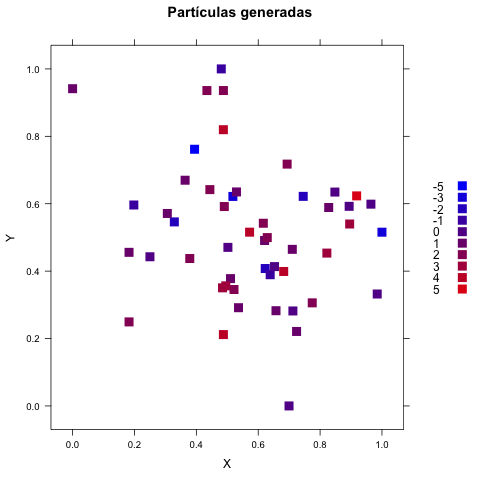
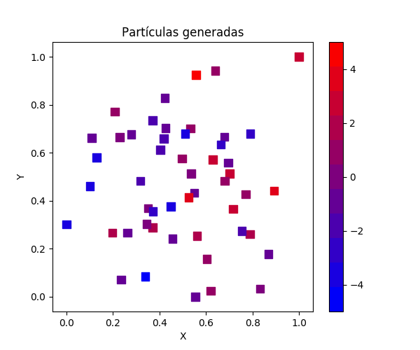
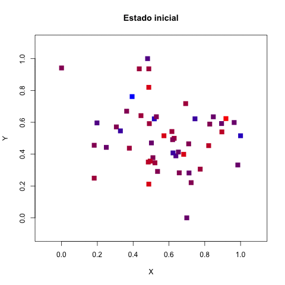
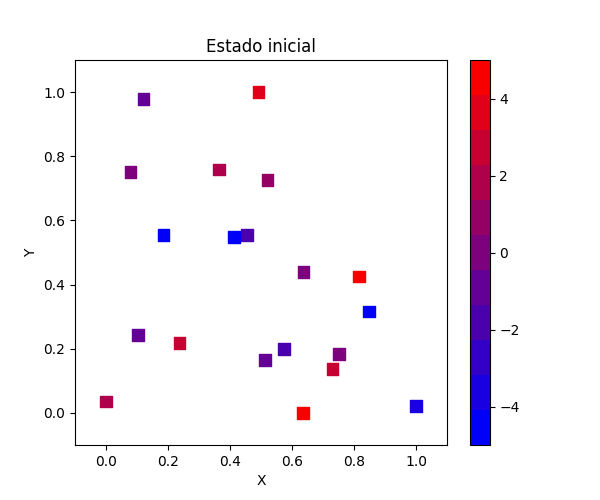
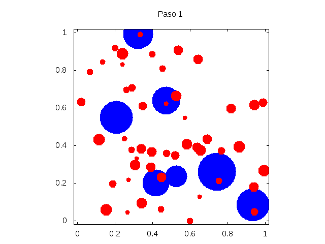
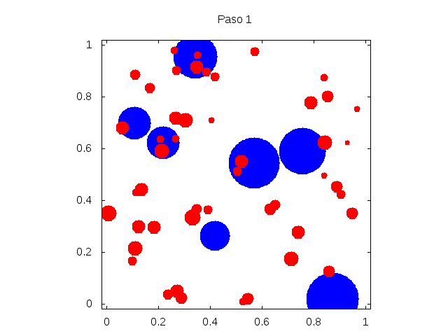

En la novena práctica trabajamos con un modelo simplificado para los fenómenos de atracción y repulsión de física (o química, de hecho). Supongamos que contemos con $n$ partículas que habitan un cuadro unitario bidimensional y que cada partícula tiene una carga eléctrica, distribuida independientemente e normalmente al azar entre $[-1, 1]$. Cargas de un mismo signo producirán una repulsión mientras cargas opuestas resultan en una atracción — la magnitud de la fuerza estará proporcional a la diferencia de magnitud de las cargas (mayores diferencias resultando en fuerzas mayores), y además la fuerza será inversamente proporcional a la distancia euclideana entre las partículas (éstas son reglas inventadas de interacción para efectos de demostración). Vamos a comenzar creando y posicionando las partículas, usando la distribución normal (posteriormente normalizada al cuadro unitario) para las coordenadas $x$ y $y$.
 Ahora, cada partícula va a ejercer una fuerza sobre cada otra partícula. Vamos a implementar la atracción entre cargas con signos opuestos y la repulsión entre signos iguales. Habrá que sumar los efectos de todas las fuerzas individuales para determinar la fuerza total sobre una partícula en específico. Luego debemos normalizar el efecto de esa fuerza con un factor de descuento $\delta$ antes de poder trasladar la partícula con desplazamientos $\Delta x$ y $\Delta y$ que dependen de los componentes horizontal y vertical de la fuerza total.
 
La automatización del borrado de viejas imágenes
con rm funciona en Linux y Mac OS, pero no en Windows si
no se le ha instalado un bash que la instalación de Python sea capaz
de alcanzar. La automatización de la creación de una
animación funciona en Linux y Mac OS con que esté
correctamente instalado ImageMagick.
Agrega a cada partícula una masa y haz que la masa cause fuerzas gravitacionales (atracciones) además de las fuerzas causadas por las cargas. Estudia la distribución de velocidades de las partículas y verifica gráficamente que esté presente una relación entre los tres factores: la velocidad, la magnitud de la carga, y la masa de las partículas. Toma en cuenta que la velocidad también es afectada por las posiciones.
El primer reto es simular dos diferentes tipos de objetos: bolitas duras grandes y partículas frágiles — cuando una partícula es atrapada entre dos bolas, se modifica: si está sola, se fragmenta, pero si hay otras partículas en esa misma traslape de dos bolas, se pegan todos juntos. Haz que ambas las bolitas y las partículas reboten de los bordes de la zona.
m <- 7
xv = (2 * (runif(m) < 0.5) - 1) * runif(m, 0.01, 0.04)
yv = (2 * (runif(m) < 0.5) - 1) * runif(m, 0.01, 0.04)
bolas <- data.frame(x = runif(m, 0, 1), y = runif(m, 0, 1), dx = xv, dy = yv, r = runif(m, 0.05, 0.1))
n <- 50
xv = (2 * (runif(n) < 0.5) - 1) * runif(n, 0.02, 0.05)
yv = (2 * (runif(n) < 0.5) - 1) * runif(n, 0.02, 0.05)
particulas <- data.frame(x = runif(n, 0, 1), y = runif(n, 0, 1), dx = xv, dy = yv, r = runif(n, 0.01, 0.03), v = rep(1, n), a = rep(1, n))
for (t in 1:25) {
# agregar aqui el codigo para que se interactuen segun las reglas establecidas
write.table(bolas, paste("bola_", t, ".dat", sep=""), sep=" ", col.names = FALSE, row.names = FALSE)
particulas = particulas[particulas$v > 0,] # se eliminan las que ya no existen
n = dim(particulas)[1]
write.table(particulas, paste("part_", t, ".dat", sep=""), sep=" ", col.names = FALSE, row.names = FALSE)
# agregar aqui el codigo para que se muevan las bolas y las particulas
}
# -*- coding: utf-8 -*
import numpy as np
import pandas as pd
from math import sqrt
from random import random, choice
m = 7
vx = (2 * (np.random.uniform(size = m) < 0.5) - 1) * np.random.uniform(low = 0.01, high = 0.04, size = m)
vy = (2 * (np.random.uniform(size = m) < 0.5) - 1) * np.random.uniform(low = 0.01, high = 0.04, size = m)
x = np.random.uniform(size = m)
y = np.random.uniform(size = m)
r = np.random.uniform(low = 0.05, high = 0.1, size = m)
bolas = pd.DataFrame({'x': x, 'y': y, 'dx': vx, 'dy': vy, 'r': r})
n = 50
vx = (2 * (np.random.uniform(size = n) < 0.5) - 1) * np.random.uniform(low = 0.02, high = 0.05, size = n)
vy = (2 * (np.random.uniform(size = n) < 0.5) - 1) * np.random.uniform(low = 0.02, high = 0.05, size = n)
x = np.random.uniform(size = n)
y = np.random.uniform(size = n)
r = np.random.uniform(low = 0.01, high = 0.03, size = n)
particulas = pd.DataFrame({'x': x, 'y': y, 'dx': vx, 'dy': vy, 'r': r, 'v': [1] * n, 'a': [1] * n})
for t in range(25):
# falta implementar las reglas establecidas
particulas = particulas.loc[particulas['v'] > 0] # se eliminan las que no existen
n = particulas.shape[0]
particulas.to_csv('p_part_{:d}.dat'.format(t), header = False, index = False)
bolas.to_csv('p_bola_{:d}.dat'.format(t), header = False, index = False)
# falta implementar movimientos


El tamaño de la bolita o de la partícula se
refleja en la visualización, lo que se logra fácilmente
usando
gnuplot,
usando la opción with circles, exportando en
formato CSV los atributos necesarios para crear la
visualización. Así demás se practica exportar valores
creados por un programa a que otro los lea.
set term gif animate delay 50
set key off
set size square
set xrange [ -0.02 : 1.02] noreverse nowriteback
set yrange [ -0.02 : 1.02 ] noreverse nowriteback
set output 'p6r.gif'
do for [i=1:25] { # para R
set title 'Paso '.i
plot 'bola_'.i.'.dat' u 1:2:5 w circles lc rgb "blue" fs solid noborder, \
'part_'.i.'.dat' u 1:2:5 w circles lc rgb "red" fs solid noborder
}
set term gif animate delay 50
set key off
set datafile separator ","
set size square
set xrange [ -0.02 : 1.02] noreverse nowriteback
set yrange [ -0.02 : 1.02 ] noreverse nowriteback
set output 'p9pr.gif'
do for [i=0:24] { # para Python
set title 'Paso '.(i + 1)
plot 'p_bola_'.i.'.dat' u 1:2:5 w circles lc rgb "blue" fs solid noborder, \
'p_part_'.i.'.dat' u 1:2:5 w circles lc rgb "red" fs solid noborder
}
Para el segundo reto, modifica el primer reto de tal forma que las bolitas no se sobrepongan sino que se reboten cuando tocan una a otra. Ahora la regla con las partículas necesariamete cambia ya que no se sobrepondrán nunca: si una partícula toca a dos bolas, se rompe, salvo que si además se empalma con otras partículas (esas si se pueden sobreponer), en cual caso se unen.
https://satuelisa.github.io/simulation/p9.html